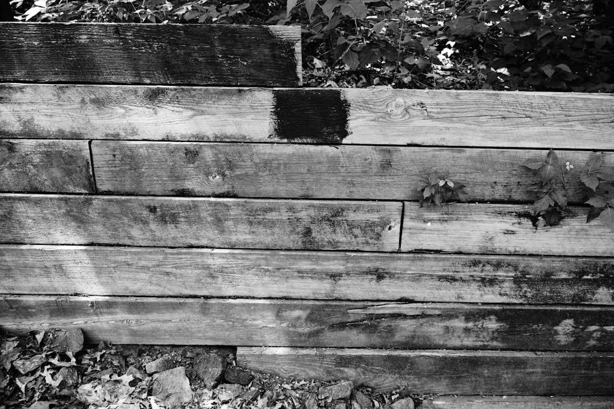

A useful wall estimate starts with wall-face area, material, access, slope, drainage, removal and any professional allowance. The published guide compares 7 wall systems, sets out 8 jurisdiction pathways and uses 3 planning bands: low, typical and high. Its calculator can include GST, a drainage allowance, upper-band contingency and professional allowances of A$1,200 to A$3,500, with A$3,000 to A$8,000 shown for complex projects.
For homeowners comparing retaining wall quotes, the practical task is to turn a vague wall idea into a brief that lets contractors price the same scope, risks and site constraints.
Retaining Wall Quotes Explained
The published Retaining Wall Quotes guide is most useful when it is treated as a briefing aid before contractor comparison. A price is easier to read when every contractor has been given the same wall length, average retained height, material preference, access note, slope condition, drainage expectation and removal question.
The calculator asks for wall length in metres and average retained height in metres, then refers to wall-face area. That distinction gives the estimate a clearer base than length alone. A short landscape edge and a larger retained face can share a metre count while needing different excavation, drainage, structural and handling assumptions.
Before requesting prices, prepare a written scope that records:
- Whether the project is a new wall, replacement, repair or early planning task.
- The preferred system, or a note that the material is still undecided.
- Whether access is good for machines, limited from the side or difficult by hand.
- Whether the working slope is gentle, moderate or constrained.
- Whether an existing wall must be removed.
- Site photos, because the form says photos are not uploaded with the first enquiry and may be requested during follow-up.
Read Materials As Scope Decisions
The guide compares concrete sleeper, cast-in-situ concrete, timber, block and brick, stone and sandstone, gabion, and rock and boulder systems. Those choices affect more than the face of the wall. They change what needs to be priced for base preparation, posts, formwork, reinforcement, fill, drainage, machinery and labour.
Concrete sleeper work is framed as a post-and-panel system, so a quote should identify the finish, post assumptions and access limits. Cast-in-situ concrete should make formwork, reinforcement, placement and finish visible. Block and brick pricing needs the masonry system, base and reinforcement assumptions stated clearly.
Natural stone, sandstone, gabion, rock and boulder options need careful wording because selection, basket fill, footprint, machine access, placement and drainage can sit behind a simple material label. Ask each contractor to name the system, state what drainage allowance is included, identify exclusions and separate any engineering or approval allowance.
Who This Applies To
This guide suits property owners who are still comparing scope, material and approval questions, not only the lowest number. It applies to new walls, replacement work, repair or assessment enquiries, and early planning where the owner is unsure which system fits the site.
It is also relevant where a wall is near a boundary, drainage is part of the concern or engineering and approval input may affect the brief. The published navigation separates repairs and warning signs, drainage problems, an engineering and approvals hub, and boundary walls and neighbours. Those categories are useful prompts for the questions that should sit beside the build price.
For location-specific planning, begin with the state or territory pathway, then confirm the site questions that apply to the property. Readers narrowing the same process to Brisbane can use this related Brisbane retaining wall quote guide for a city-level version of the checklist.
Approval And Engineering Questions
The guide directs readers to state and territory pathways, then to property-specific approval, engineering, drainage and boundary questions. That sequence is useful because a national cost estimate cannot settle the requirements for an individual wall. The contractor brief should leave room for site checks rather than assuming the allowance is complete.
Ask whether each price assumes planning information only, a structural assessment, engineering input or approval handling. If a professional allowance is included, ask whether it follows the standard range shown by the calculator or the complex project range. If it is excluded, ask what information is needed before construction can be priced responsibly.
Useful comparison questions include:
- Does the price include drainage, and what is covered by that allowance?
- Is retained height measured separately from any exposed fence height?
- Are soil, loads and slope known assumptions or items still to be assessed?
- Is boundary work included, excluded or dependent on further checks?
Use The Planning Band Properly
The calculator result is described as planning information only, not a quote or structural assessment. Treat it as a way to frame the conversation before a site-specific price is prepared. The guide says soil, loads, drainage, access, design, approvals and scope can materially change the result.
The low, typical and high bands help when they show which inputs moved the estimate. A constrained slope, difficult access, removal of an old wall, a different material system or a professional allowance can change the range before a contractor has inspected the site.
The guide also states that the planning band and inputs travel with the brief. That is useful only when the inputs are accurate. Recheck wall length, average retained height, material choice, access and slope before sending the enquiry so contractors are comparing the same job.
- Measure the wall face. Record wall length and average retained height, because the calculator works from wall-face area.
- Shortlist materials. If the system is undecided, ask contractors to compare suitable options rather than pricing only an appearance preference.
- Describe access and slope. State whether machine access is good, limited or difficult, and whether the slope is gentle, moderate or constrained.
- Clarify approvals. Ask whether engineering, approval checks and boundary questions are included, excluded or still to be assessed.
- Compare inclusions. Read each quote against drainage, removal, GST, contingency, exclusions and professional allowances.
| Item | Planning estimate | Contractor quote |
|---|---|---|
| Purpose | Frames a likely cost band from stated inputs | Prices a defined scope for a specific site |
| Inputs | Length, retained height, material, access, slope, removal and allowance choices | Inspection details, inclusions, exclusions, design assumptions and site constraints |
| Status | Planning information only | Commercial offer subject to the contractor's terms |
| Best use | Shortlisting questions and budget expectations | Selecting scope, timing and responsibilities |
Common questions
What information should I provide before requesting a price? Provide wall length, average retained height, project type, likely material, access, slope and whether an existing wall needs removal. Photos are also useful because the form says they may be requested during follow-up.
Is the calculator result a final price? No. The guide states that the result is planning information only, not a quote or structural assessment. Soil, loads, drainage, access, design, approvals and scope can materially change it.
Which wall material should I choose? The guide does not present one universal best material. It compares seven systems and points readers toward site fit, access, drainage, footprint and specification.
When should approval or engineering be discussed? Discuss it before comparing prices. The guide separates engineering, approval costs, boundary walls, neighbours and when an engineer may be needed, so these questions can affect scope and allowance choices.
This guide covers quote preparation, material comparison, planning bands, approval questions and contractor briefing for Australian retaining wall projects.